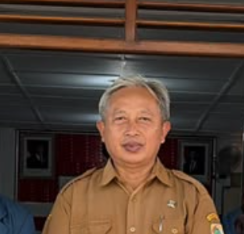

Kelurahan Kedungrejo
Kabupaten Wonogiri
Kabupaten Wonogiri
Sumber informasi terbaru tentang pemerintahan di Kelurahan Kedungrejo
Melalui website ini Anda dapat menjelajahi segala hal yang terkait dengan desa. Aspek pemerintahan, penduduk, demografi, potensi desa, dan juga berita tentang desa.

"Selamat datang di website resmi Kelurahan Kedungrejo. Kami berkomitmen untuk memberikan pelayanan terbaik dan transparan bagi seluruh warga demi terwujudnya masyarakat yang sejahtera dan harmonis."
Kelurahan Kedungrejo secara administratif terbagi menjadi 8 Lingkungan dan 20 Rukun Tetangga (RT).
Ketua:
Dinaungi oleh Gapoktan Kedungrejo "Kedung Makmur"
(Ketua: Pak Jaimin)